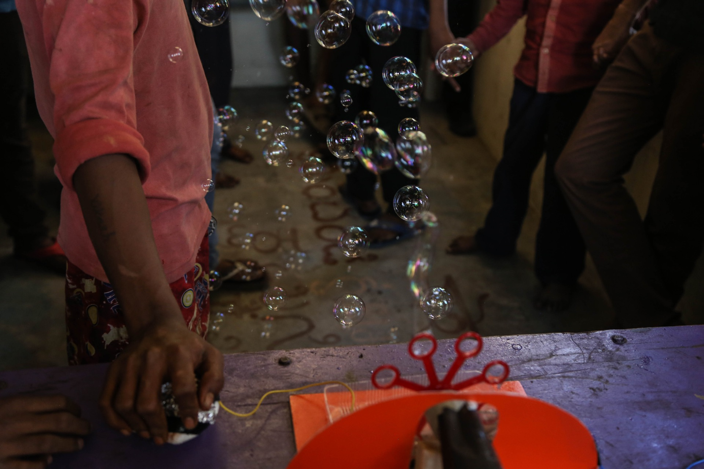

Bubbles–Connecting Pols
Overview
We created a simple installation which would create soap bubbles when a group of people held hands together and completed a human 'circuit' with the intention of bringing children of different communities together for a brief moment at The Conflictorium in Ahmedabad.
Role
Designer and Developer
The UnBox Caravan is a breakaway festival of the UnBox Festival, one of India’s few design festivals. The Caravan, supported by the Mozilla Foundation, brought together designers, technologists, digital activists, creative coders and craftspeople for two weeks in Ahmedabad. The senior Product Design and Exhibition Design batches worked together with the professional to learn how to work with Internet of Things (IoT) devices and create installations which would be exhibited at the Conflictorium, a museum which explores human conflicts.


Initial ideation
We wanted to try and design an experience which could, if only for a moment masks these tensions, and get people to come together and enjoy their time together, however brief it may be for. The idea was simple. We wanted to get the children of these five communities to come together and interact with each other, for a brief moment. The children of these communities were discouraged from interacting with each other by their parents, and often led disparate lives, even though they were neighbours. We created a simple installation which would produce bubbles, yes, soap bubbles every time the viewers would interact with each other.


Bubbles making experiments
To accomplish this, we created a simple bubble making machine attached to two foil balls. When the children would hold the foil balls and hold each others hands to complete the circuit, the bubble making machine would spin up and start creating bubbles! If any person broke the connection, the bubbles would stop. We weren’t sure if this would work, or if this would have any sort of impact. But to our surprise, we had children coming in by droves to see our installation and play with the bubbles. When they figured out that they had to hold hands to enjoy the bubbles, they started communicating, and interacting with one another to ensure the bubbles would keep coming. We saw some moments through day where the children worked together for those brief moments, before dispersing and going their separate ways.

The bubble maker in action

Happy outcomes
A crash course in working with IoT and electronics quickly evolved into bubbles. The goal was to use our new tools to find ways to make an intervention in the community. Using quick and dirty prototypes we thought of an installation which would only activate when everyone would hold hands. The human circuit would then switch on the installations. Presenting the installations to children from deeply divided communities posed a challenge. To unite them, we got the children to hold hands with each other which would then activate the installations to produce bubbles! The kids, forgetting community divides, even for that brief moment, communicated and helped each other to hold hands to enjoy the bubbles.

The results were perhaps unexpected, but very welcome

The team